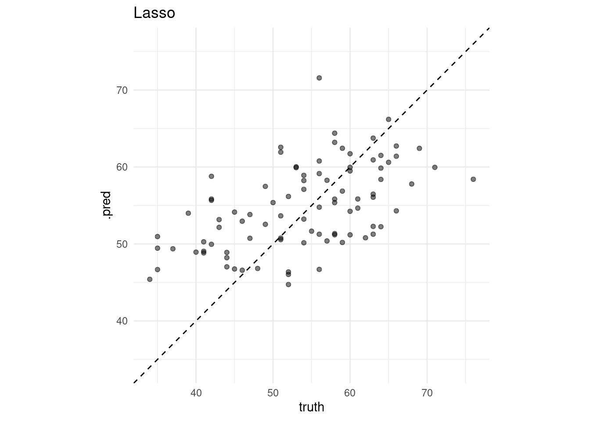

Chapter 7 XGBoost
7.1 Load packages
## Loading required package: lattice## Loading required package: ggplot2## Type 'citation("pROC")' for a citation.##
## Attaching package: 'pROC'## The following objects are masked from 'package:stats':
##
## cov, smooth, var##
## Attaching package: 'vip'## The following object is masked from 'package:utils':
##
## vi## ── Attaching packages ─────────────────────── tidyverse 1.3.0 ──## ✓ tibble 3.0.3 ✓ dplyr 1.0.2
## ✓ tidyr 1.1.2 ✓ stringr 1.4.0
## ✓ readr 1.3.1 ✓ forcats 0.5.0
## ✓ purrr 0.3.4## ── Conflicts ────────────────────────── tidyverse_conflicts() ──
## x dplyr::filter() masks stats::filter()
## x dplyr::lag() masks stats::lag()
## x purrr::lift() masks caret::lift()
## x dplyr::slice() masks xgboost::slice()## ── Attaching packages ────────────────────── tidymodels 0.1.1 ──## ✓ broom 0.7.0 ✓ recipes 0.1.13
## ✓ dials 0.0.9 ✓ rsample 0.0.8
## ✓ infer 0.5.3 ✓ tune 0.1.1
## ✓ modeldata 0.0.2 ✓ workflows 0.2.0
## ✓ parsnip 0.1.3 ✓ yardstick 0.0.7## ── Conflicts ───────────────────────── tidymodels_conflicts() ──
## x scales::discard() masks purrr::discard()
## x dplyr::filter() masks stats::filter()
## x recipes::fixed() masks stringr::fixed()
## x dplyr::lag() masks stats::lag()
## x purrr::lift() masks caret::lift()
## x yardstick::precision() masks caret::precision()
## x yardstick::recall() masks caret::recall()
## x yardstick::sensitivity() masks caret::sensitivity()
## x dplyr::slice() masks xgboost::slice()
## x yardstick::spec() masks readr::spec()
## x yardstick::specificity() masks caret::specificity()
## x recipes::step() masks stats::step()## here() starts at /home/jae/Machine-Learning-in-R##
## Attaching package: 'glue'## The following object is masked from 'package:dplyr':
##
## collapse## Loading required package: foreach##
## Attaching package: 'foreach'## The following objects are masked from 'package:purrr':
##
## accumulate, when## Loading required package: iterators## Loading required package: parallel7.2 Load data
Load train_x_class, train_y_class, test_x_class, and test_y_class variables we defined in 02-preprocessing.Rmd for this classification task.
7.3 Overview
From Freund Y, Schapire RE. 1999. A short introduction to boosting. Journal of Japanese Society for Artificial Intelligence 14:771-780:
“Boosting is a general method for improving the accuracy of any given learning algorithm” and evolved from AdaBoost and PAC learning (p. 1-2). Gradient boosted machines are ensembles decision tree methods of “weak” trees that are just slightly more accurate than random guessing. These are then “boosted” into “strong” learners. That is, the models don’t have to be accurate over the entire feature space."
The model first tries to predict each value in a dataset - the cases that can be predicted easily are downweighted so that the algorithm does not try as hard to predict them.
However, the cases that the model has difficulty predicting are upweighted so that the model more assertively tries to predict them. This continues for multiple “boosting iterations”, with a training-based performance measure produced at each iteration. This method can drive down generalization error (p. 5).
Rather than testing only a single model at a time, it is useful to tune the parameters of that single model against multiple versions. Bootstrap is the default, but we want cross-validation.
Create two objects - cv_control and xgb_grid. cv_control will allow us to customize the cross-validation settings, while xgb_grid lets us evaluate the model with different settings:
7.4 Non-tidy
7.4.1 Define cv_control
# Use 5-fold cross-validation with 2 repeats as our evaluation procedure (instead of the default "bootstrap")
cv_control <- caret::trainControl(
method = "repeatedcv",
# Number of folds
number = 5L,
# Number of complete sets of folds to compute
repeats = 2L,
# Calculate class probabilities?
classProbs = TRUE,
# Indicate that our response variable is binary
summaryFunction = twoClassSummary) 7.4.2 Define xgb_grid
## model parameter label forReg forClass
## 1 xgbTree nrounds # Boosting Iterations TRUE TRUE
## 2 xgbTree max_depth Max Tree Depth TRUE TRUE
## 3 xgbTree eta Shrinkage TRUE TRUE
## 4 xgbTree gamma Minimum Loss Reduction TRUE TRUE
## 5 xgbTree colsample_bytree Subsample Ratio of Columns TRUE TRUE
## 6 xgbTree min_child_weight Minimum Sum of Instance Weight TRUE TRUE
## 7 xgbTree subsample Subsample Percentage TRUE TRUE
## probModel
## 1 TRUE
## 2 TRUE
## 3 TRUE
## 4 TRUE
## 5 TRUE
## 6 TRUE
## 7 TRUE# turn off scientific notation
options(scipen = 999)
# More details at https://xgboost.readthedocs.io/en/latest/parameter.html
(xgb_grid = expand.grid(
# Number of trees to fit, aka boosting iterations
nrounds = c(100, 300, 500, 700, 900),
# Depth of the decision tree (how many levels of splits).
max_depth = c(1, 6),
# Learning rate: lower means the ensemble will adapt more slowly.
eta = c(0.0001, 0.01, 0.2),
# Make this larger and xgboost will tend to make smaller trees
gamma = 0,
colsample_bytree = 1.0,
subsample = 1.0,
# Stop splitting a tree if we only have this many obs in a tree node.
min_child_weight = 10L))## nrounds max_depth eta gamma colsample_bytree subsample min_child_weight
## 1 100 1 0.0001 0 1 1 10
## 2 300 1 0.0001 0 1 1 10
## 3 500 1 0.0001 0 1 1 10
## 4 700 1 0.0001 0 1 1 10
## 5 900 1 0.0001 0 1 1 10
## 6 100 6 0.0001 0 1 1 10
## 7 300 6 0.0001 0 1 1 10
## 8 500 6 0.0001 0 1 1 10
## 9 700 6 0.0001 0 1 1 10
## 10 900 6 0.0001 0 1 1 10
## 11 100 1 0.0100 0 1 1 10
## 12 300 1 0.0100 0 1 1 10
## 13 500 1 0.0100 0 1 1 10
## 14 700 1 0.0100 0 1 1 10
## 15 900 1 0.0100 0 1 1 10
## 16 100 6 0.0100 0 1 1 10
## 17 300 6 0.0100 0 1 1 10
## 18 500 6 0.0100 0 1 1 10
## 19 700 6 0.0100 0 1 1 10
## 20 900 6 0.0100 0 1 1 10
## 21 100 1 0.2000 0 1 1 10
## 22 300 1 0.2000 0 1 1 10
## 23 500 1 0.2000 0 1 1 10
## 24 700 1 0.2000 0 1 1 10
## 25 900 1 0.2000 0 1 1 10
## 26 100 6 0.2000 0 1 1 10
## 27 300 6 0.2000 0 1 1 10
## 28 500 6 0.2000 0 1 1 10
## 29 700 6 0.2000 0 1 1 10
## 30 900 6 0.2000 0 1 1 10# Other hyperparameters: gamma, column sampling, row sampling
# How many combinations of settings do we end up with?
nrow(xgb_grid)## [1] 307.4.3 Fit model
Note that we will now use Area Under the ROC Curve (called “AUC”) as our performance metric, which relates the number of true positives (sensitivity) to the number of true negatives (specificity).
However, xgboost is expecting character strings as the factor level names so our integer 1s and 0s will not do. Let’s quickly recode the 1s as “yes” and 0s as “no”.
xgb_train_y_class <- as.factor(ifelse(train_y_class == 1, "yes", "no"))
xgb_test_y_class <- as.factor(ifelse(test_y_class == 1, "yes", "no"))
table(train_y_class, xgb_train_y_class) ## xgb_train_y_class
## train_y_class no yes
## 0 97 0
## 1 0 116## xgb_test_y_class
## test_y_class no yes
## 0 41 0
## 1 0 49NOTE: This will take a few minutes to complete!
set.seed(1)
# cbind: caret expects the Y response and X predictors to be part of the same dataframe
model <- caret::train(xgb_train_y_class ~ ., data = cbind(xgb_train_y_class, train_x_class),
# Use xgboost's tree-based algorithm (i.e. gbm)
method = "xgbTree",
# Use "AUC" as our performance metric, which caret incorrectly calls "ROC"
metric = "ROC",
# Specify our cross-validation settings
trControl = cv_control,
# Test multiple configurations of the xgboost algorithm
tuneGrid = xgb_grid,
# Hide detailed output (setting to TRUE will print that output)
verbose = FALSE)
# See how long this algorithm took to complete (from ?proc.time)
# user time = the CPU time charged for the execution of user instructions of the calling process
# system time = the CPU time charged for execution by the system on behalf of the calling process
# elapsed time = real time since the process was started
model$times ## $everything
## user system elapsed
## 84.838 0.343 11.431
##
## $final
## user system elapsed
## 0.303 0.004 0.043
##
## $prediction
## [1] NA NA NA- Review model summary table
## eXtreme Gradient Boosting
##
## 213 samples
## 21 predictor
## 2 classes: 'no', 'yes'
##
## No pre-processing
## Resampling: Cross-Validated (5 fold, repeated 2 times)
## Summary of sample sizes: 171, 171, 170, 170, 170, 171, ...
## Resampling results across tuning parameters:
##
## eta max_depth nrounds ROC Sens Spec
## 0.0001 1 100 0.7784849 0.7723684 0.7846014
## 0.0001 1 300 0.7784849 0.7723684 0.7846014
## 0.0001 1 500 0.7784849 0.7723684 0.7846014
## 0.0001 1 700 0.7784849 0.7723684 0.7846014
## 0.0001 1 900 0.7784849 0.7723684 0.7846014
## 0.0001 6 100 0.8083438 0.7723684 0.7846014
## 0.0001 6 300 0.8083438 0.7723684 0.7846014
## 0.0001 6 500 0.8088873 0.7723684 0.7846014
## 0.0001 6 700 0.8088873 0.7723684 0.7846014
## 0.0001 6 900 0.8088873 0.7723684 0.7846014
## 0.0100 1 100 0.8533648 0.7673684 0.7672101
## 0.0100 1 300 0.8602136 0.7107895 0.7934783
## 0.0100 1 500 0.8597273 0.7218421 0.8195652
## 0.0100 1 700 0.8583886 0.7376316 0.8110507
## 0.0100 1 900 0.8547540 0.7478947 0.8110507
## 0.0100 6 100 0.8567916 0.7571053 0.7500000
## 0.0100 6 300 0.8571091 0.7371053 0.8108696
## 0.0100 6 500 0.8552307 0.7376316 0.8065217
## 0.0100 6 700 0.8532532 0.7378947 0.8067029
## 0.0100 6 900 0.8540542 0.7378947 0.8023551
## 0.2000 1 100 0.8490027 0.7478947 0.8153986
## 0.2000 1 300 0.8427422 0.7476316 0.8197464
## 0.2000 1 500 0.8397979 0.7528947 0.8197464
## 0.2000 1 700 0.8375858 0.7528947 0.8197464
## 0.2000 1 900 0.8355416 0.7528947 0.8197464
## 0.2000 6 100 0.8463673 0.7428947 0.8067029
## 0.2000 6 300 0.8418040 0.7428947 0.8240942
## 0.2000 6 500 0.8408963 0.7528947 0.8153986
## 0.2000 6 700 0.8383867 0.7476316 0.8153986
## 0.2000 6 900 0.8359535 0.7526316 0.8153986
##
## Tuning parameter 'gamma' was held constant at a value of 0
## Tuning
##
## Tuning parameter 'min_child_weight' was held constant at a value of 10
##
## Tuning parameter 'subsample' was held constant at a value of 1
## ROC was used to select the optimal model using the largest value.
## The final values used for the model were nrounds = 300, max_depth = 1, eta
## = 0.01, gamma = 0, colsample_bytree = 1, min_child_weight = 10 and subsample
## = 1.7.4.4 Investigate Results
## nrounds max_depth eta gamma colsample_bytree min_child_weight subsample
## 12 300 1 0.01 0 1 10 1# And the corresponding performance metrics.
# TODO: fix
model$results[as.integer(rownames(model$bestTune)), ]## eta max_depth gamma colsample_bytree min_child_weight subsample nrounds
## 27 0.2 6 0 1 10 1 300
## ROC Sens Spec ROCSD SensSD SpecSD
## 27 0.841804 0.7428947 0.8240942 0.05281059 0.08526433 0.09171769# Plot the performance across all hyperparameter combinations. Nice!
options(scipen = 999)
ggplot(model) + theme_bw() + ggtitle("Xgboost hyperparameter comparison") 
## xgbTree variable importance
##
## only 20 most important variables shown (out of 21)
##
## Overall
## thal_X2 100.0000
## exang 48.9606
## thalach 20.9729
## oldpeak 18.2120
## thal_X3 5.5648
## cp_X2 3.3606
## slope_X2 1.0981
## sex_X1 0.9987
## chol 0.9960
## thal_X1 0.0000
## cp_X3 0.0000
## fbs 0.0000
## ca_X1 0.0000
## restecg 0.0000
## ca_X2 0.0000
## ca_X4 0.0000
## cp_X1 0.0000
## ca_X3 0.0000
## age 0.0000
## slope_X1 0.0000
## Warning: `as.tibble()` is deprecated as of tibble 2.0.0.
## Please use `as_tibble()` instead.
## The signature and semantics have changed, see `?as_tibble`.
## This warning is displayed once every 8 hours.
## Call `lifecycle::last_warnings()` to see where this warning was generated.
# Generate predicted labels.
predicted_labels = predict(model, test_x_class)
table(xgb_test_y_class, predicted_labels)## predicted_labels
## xgb_test_y_class no yes
## no 31 10
## yes 12 37# Generate class probabilities.
pred_probs = predict(model, test_x_class, type = "prob")
head(pred_probs)## no yes
## 1 0.2431413 0.7568587
## 2 0.5225858 0.4774142
## 3 0.3271097 0.6728903
## 4 0.4680114 0.5319886
## 5 0.2222146 0.7777854
## 6 0.3198714 0.6801286## Confusion Matrix and Statistics
##
## Reference
## Prediction no yes
## no 31 12
## yes 10 37
##
## Accuracy : 0.7556
## 95% CI : (0.6536, 0.84)
## No Information Rate : 0.5444
## P-Value [Acc > NIR] : 0.00002879
##
## Kappa : 0.5092
##
## Mcnemar's Test P-Value : 0.8312
##
## Sensitivity : 0.7561
## Specificity : 0.7551
## Pos Pred Value : 0.7209
## Neg Pred Value : 0.7872
## Prevalence : 0.4556
## Detection Rate : 0.3444
## Detection Prevalence : 0.4778
## Balanced Accuracy : 0.7556
##
## 'Positive' Class : no
## # Define ROC characteristics
(rocCurve = pROC::roc(response = xgb_test_y_class,
predictor = pred_probs[, "yes"],
levels = rev(levels(xgb_test_y_class)),
auc = TRUE, ci = TRUE))## Setting direction: controls > cases##
## Call:
## roc.default(response = xgb_test_y_class, predictor = pred_probs[, "yes"], levels = rev(levels(xgb_test_y_class)), auc = TRUE, ci = TRUE)
##
## Data: pred_probs[, "yes"] in 49 controls (xgb_test_y_class yes) > 41 cases (xgb_test_y_class no).
## Area under the curve: 0.8432
## 95% CI: 0.7609-0.9255 (DeLong)# Plot ROC curve with optimal threshold.
plot(rocCurve,
print.thres.cex = 2,
print.thres = "best",
main = "XGBoost on test set", col = "blue", las = 1) 
# Get specificity and sensitivity at particular threshold
pROC::coords(rocCurve, 0.01, transpose = FALSE)## threshold specificity sensitivity
## 1 0.01 1 0## threshold specificity sensitivity
## 1 0.525 0.755102 0.7560976## threshold specificity sensitivity
## 1 0.99 0 17.5 Tidymodels
This tidymodels part of the workshop heavily draws on Julia Silge’s tutorial.
7.5.1 parsnip
- Build a model
- Specify a model
- Specify an engine
- Specify a mode
# workflow
xg_wf <- workflow() %>% add_formula(target~.)
# spec
xg_spec <- boost_tree(
# Mode
mode = "classification",
# Tuning parameters
# The number of trees to fit, aka boosting iterations
trees = c(100, 300, 500, 700, 900),
# The depth of the decision tree (how many levels of splits).
tree_depth = c(1, 6),
# Learning rate: lower means the ensemble will adapt more slowly.
learn_rate = c(0.0001, 0.01, 0.2),
# Stop splitting a tree if we only have this many obs in a tree node.
min_n = 10L
) %>%
set_engine("xgboost")
xg_wf <- xg_wf %>% add_model(xg_spec)- Fit a model
## Warning in begin_iteration:end_iteration: numerical expression has 5 elements:
## only the first used7.5.2 yardstick
- Let’s formally test prediction performance.
Metrics
accuracy: The proportion of the data predicted correctlyprecision: Positive predictive valuerecall(specificity): True positive rate (e.g., healthy people really healthy)

From wikipedia
- To learn more about other metrics, check out the yardstick package references.
## # A tibble: 3 x 3
## .metric .estimator .estimate
## <chr> <chr> <dbl>
## 1 accuracy binary 0.733
## 2 precision binary 0.730
## 3 recall binary 0.659 - Visualize the confusion matrix.
- Visualize the confusion matrix.
- The following visualization code draws on Diego Usai’s medium post.

7.5.3 tune
7.5.3.1 tune ingredients
We focus on the following parameters: trees, tree_depth, learn_rate, min_n, mtry, loss_reduction, and sample_size
tune_spec <-
xg_spec <- boost_tree(
# Mode
mode = "classification",
# Tuning parameters
# The number of trees to fit, aka boosting iterations
trees = tune(),
# The depth of the decision tree (how many levels of splits).
tree_depth = tune(),
# Learning rate: lower means the ensemble will adapt more slowly.
learn_rate = tune(),
# Stop splitting a tree if we only have this many obs in a tree node.
min_n = tune(),
loss_reduction = tune(),
# The number of randomly selected parameters
mtry = tune(),
# The size of the data set used for modeling within an iteration
sample_size = tune()
) %>%
set_engine("xgboost")
# Space-filling parameter grids
xg_grid <- grid_latin_hypercube(
trees(),
tree_depth(),
learn_rate(),
min_n(),
loss_reduction(),
sample_size = sample_prop(),
finalize(mtry(), train_x_class),
size = 30
)
xg_grid %>% slice(1:10)## # A tibble: 10 x 7
## trees tree_depth learn_rate min_n loss_reduction sample_size mtry
## <int> <int> <dbl> <int> <dbl> <dbl> <int>
## 1 1341 8 3.16e- 5 6 2.77e- 8 0.170 15
## 2 860 15 9.77e- 6 22 3.64e-10 0.936 11
## 3 778 2 4.64e-10 37 1.93e- 5 0.726 14
## 4 1048 12 4.13e- 2 32 3.52e- 7 0.953 6
## 5 1602 7 7.32e- 7 3 5.62e- 5 0.692 8
## 6 1411 10 5.08e- 2 15 8.70e- 4 0.596 14
## 7 80 9 7.74e- 5 10 1.45e+ 1 0.455 5
## 8 1507 2 2.08e- 2 20 6.93e- 5 0.323 16
## 9 1841 12 8.74e- 4 40 4.18e+ 0 0.535 12
## 10 1324 3 8.80e- 9 8 4.38e- 9 0.236 187.5.3.2 Add these elements to a workflow
7.5.3.3 Visualize
- The following plot draws on the vignette of the tidymodels package.
xg_res %>%
collect_metrics() %>%
filter(.metric == "roc_auc") %>%
pivot_longer(mtry:sample_size,
values_to = "value",
names_to = "parameter") %>%
ggplot(aes(x = value, y = mean, color = parameter)) +
geom_point(alpha = 0.8, show.legend = FALSE) +
facet_wrap(~parameter, scales = "free_x") +
labs(y = "AUC",
x = NULL)
## # A tibble: 1 x 8
## mtry trees min_n tree_depth learn_rate loss_reduction sample_size .config
## <int> <int> <int> <int> <dbl> <dbl> <dbl> <chr>
## 1 8 1602 3 7 0.000000732 0.0000562 0.692 Model14xg_fit_tuned <- finalize_xg %>%
fit(train_x_class %>% bind_cols(tibble(target = train_y_class)))
# Metrics
(xg_fit_viz_metr + labs(title = "Non-tuned")) / (visualize_class_eval(xg_fit_tuned) + labs(title = "Tuned"))# Confusion matrix
(xg_fit_viz_mat + labs(title = "Non-tuned")) / (visualize_class_conf(xg_fit_tuned) + labs(title = "Tuned"))
- Visualize variable importance

- Apply the tuned model to the test dataset
## # A tibble: 2 x 3
## .metric .estimator .estimate
## <chr> <chr> <dbl>
## 1 accuracy binary 0.833
## 2 roc_auc binary 0.938TBD: Challenge 4